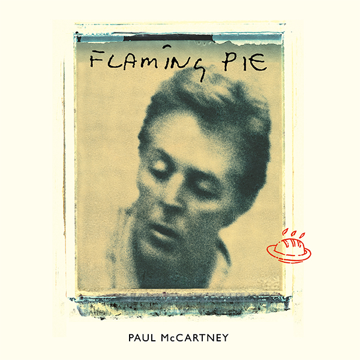

Sticking Out Of My Back Pocket – Heaven On A Sunday - 03/08/2020

Long summer days are truly here… Time to relax, don’t you think? Some of the best songs are the ones you can stick in your headphones and settle down with, as soft and comforting as a worn-out blanket. With this in mind, we’ve delved into Paul’s catalogue and hand-selected songs with a more chilled-out vibe for August’s ‘Sticking Out Of My Back Pocket’ playlist. From old classics like ‘The Back Seat Of My Car’ to new favourites such as ‘Dominoes’, this is your time to switch off from the stress of everyday life and let the music take over. Listen to the playlist here!
A nice, relaxing month… ‘That Would Be Something’, wouldn’t it? What are your favourite Paul tracks to chill out to? Let us know in the comments! Two songs on this month’s playlist, ‘Heaven On A Sunday’ and ‘Calico Skies - Home Recording’ feature on the newly-released Flaming Pie Archive Collection.
The 'Flaming Pie' Archive Collection - Out Now! - 31/07/2020

THE THIRTEENTH INSTALMENT TO PAUL'S GRAMMY-WINNING ARCHIVE COLLECTION – FLAMING PIE IS OUT NOW Order your copy from your local record store or online here! Fresh out the oven Flaming Pie is here today! The thirteenth instalment in Paul’s Grammy Award-winning Archive Collection series is finally here. Have you got your copy yet? Formats include a 5CD/2DVD/4LP Collector’s Edition, a 5CD/2DVD Deluxe Edition, plus 3LP, 2LP and 2CD editions, and it’s available on streaming platforms
Originally released May 5, 1997, Flaming Pie ended a four-year gap between McCartney studio albums. Recorded largely in the wake of Paul’s involvement in the curation and release of The Beatles Anthology series, Flaming Pie was shaped and inspired by that experience, with Paul remarking at the time “(The Beatles Anthology) reminded me of The Beatles' standards and the standards that we reached with the songs. So in a way it was a refresher course that set the framework for this album.” Produced by Paul, Jeff Lynne and George Martin and featuring a supporting cast of family and friends including Ringo Starr, Steve Miller, Linda McCartney and son James, Flaming Pie is equal parts a masterclass in songcraft and a sustained burst of joyful spontaneity. With highlights ranging from the uplifting and inspirational opener 'The Song We Were Singing' to the raucous title track (named for a quote from an early John Lennon interview on the origin of The Beatles’ name: "It came in a vision – a man appeared on a flaming pie and said unto them, 'from this day on you are Beatles with an A.’”) to the pensive 'Calico Skies,' and featuring singles 'Young Boy,' 'The World Tonight' and 'Beautiful Night,' Flaming Pie would represent yet another pinnacle in Paul’s solo catalogue: Released to rapturous reviews, the album would be Paul’s most commercially successful release of the ‘90s, achieving his highest chart positions since the ‘80s and would receive gold certifications in the US, UK, Japan and more. We’ve shared a fair few slices of Flaming Pie so far. Three Flaming Pie tracks have received special EP releases, with ‘Young Boy’, ‘The World Tonight’ and 'Beautiful Night’ all remastered with additional home recordings. We also released five music videos on Paul’s YouTube channel – watch here!